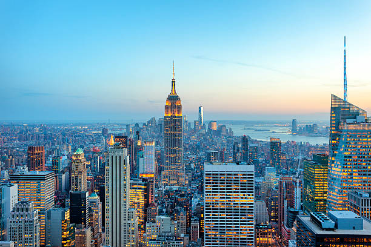

Bienvenue sur mon site !
Bonjour cher visiteur je te souhaite la bienvenue sur mon site qui parle de la ville de New york. Tu pourras y retrouver des informations utiles et j'espère que cela te donnera envie d'y aller !
Introduction
New York, souvent surnommée "la Grosse Pomme", est une métropole vibrante et dynamique qui incarne le rêve américain. Célèbre pour ses gratte-ciels emblématiques comme l'Empire State Building et le One World Trade Center, la ville est un véritable symbole de modernité.
Les quartiers comme Manhattan, Brooklyn, et le Queens offrent une diversité culturelle fascinante. Times Square, avec ses néons éclatants, est le cœur battant de la ville, tandis que Central Park offre un havre de paix au milieu de l'agitation urbaine.
York est également réputée pour sa scène artistique, avec des musées de renommée mondiale tels que le MoMA et le Metropolitan Museum of Art, ainsi qu'un théâtre florissant à Broadway. Sa cuisine est tout aussi variée, allant des célèbres bagels aux hot-dogs en passant par des restaurants étoilés Michelin.
Enfin, la ville est un carrefour d'opportunités et d'idées, attirant des millions de visiteurs et de nouveaux habitants chaque année. L’énergie et le rythme de New York en font un endroit unique et inoubliable.